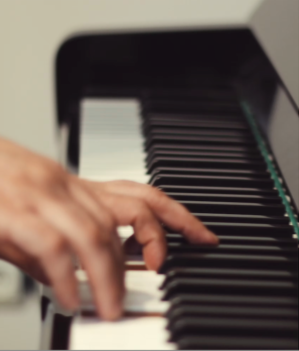

Muzieklessen
Behapbare lessen voor alle leeftijden

Pianoles
Bij Praktijk Echo kan je terecht voor pianoles voor kinderen, jongeren en volwassenen. Zowel beginners als wie al enige ervaring heeft, kan instappen. Je hebt geen kennis van notenschrift nodig. We vertrekken vanuit jouw niveau en bouwen stap voor stap verder, met aandacht voor techniek, muzikaliteit en spelplezier. De lessen worden op jouw tempo opgebouwd.
Of je nu je eerste liedje wil leren, je basis wil versterken of je muzikale vaardigheden wil verdiepen: pianoles bij Praktijk Echo biedt een heldere structuur, persoonlijke begeleiding en ruimte om te groeien.
Muziekinitiatie
In muziekinitiatie ontdekken kinderen muziek op een vrije en speelse manier. We leren noten, ritme en andere muzikale bouwstenen niet vanuit theorie, maar door ze te beleven: door te spelen, te bewegen, te zingen, te luisteren en vooral… door zelf te creëren.
Via speelse opdrachten krijgt elke noot een eigen kleur en leren kinderen eenvoudige ritmes zelfstandig uitvoeren. Dat vormt de basis om hun eerste liedjes te spelen én om hun eigen muziek te componeren. (Geïnspireerd door de methode Children Are Composers.)
In vrije improvisatie experimenteren ze met klank, ritme en harmonie. Ze geven hun spontane ideeën vorm en ervaren muziek als iets dat ze zélf kunnen maken.
Zo groeit muzikale kennis vanuit plezier, nieuwsgierigheid en verwondering.
Deze ervaringen vormen een krachtige basis om te groeien: als muzikant, maar ook als persoon die met vertrouwen durft te creëren, te proberen en zichzelf te laten horen.
Notenleer op maat
Wil je je basiskennis notenleer verbeteren voor je opleiding, maar loop je tegen wat obstakels aan? Ook hiervoor kan je bij mij terecht. Samen werken we aan de benodigde vaardigheden, zodat je met zelfvertrouwen je examen kunt afleggen.
Lesson Types
Persoonlijke lessen
Een-op-een instructie afgestemd op je individuele leer tempo en muzikale interesses. Perfect voor gerichte, persoonlijke ontwikkeling.
- 30 minuten sessies
- Aangepaste curriculum
- Flexibele planning
Kinderprogramma
Leeftijdsgemiddelde instructie voor jonge leerlingen (4-12 jaar) met behulp van spellen, verhalen en leuke activiteiten om een muzikale basis te bouwen.
- Spelgebaseerd leren
- Ouder betrokkenheid welkom
- Kortere aandachtsperiodes vereist
Wat je zal leren
Techniek & Fundamenten
Correct handpositie, houding, vinger-oefeningen en technische ontwikkeling voor efficiënte, blessuurvrije spel.
Muziekschrijven
Schaaltjes, akkoorden, harmonie, ritme en muzikale structuur begrijpen om je spel en begrip te verbeteren.
Zichtleesvaardigheden
Ontwikkeling van de vermogen om muziek op eerste gezicht te lezen en uit te voeren, waardoor een wereld van muzikale mogelijkheden wordt geopend.
Performance Skills
Zelfzekerheid opbouwen door regelmatige prestatie-gelegenheden, recitals en ontwikkeling van scènepresence.
Gehoor Training
Ontwikkeling van je muzikale oor om intervallen, akkoorden en melodieën te herkennen door alleen te luisteren.
Muzikale Uitdrukking
Leer muziek met emotie, dynamiek en persoonlijke stijl te interpreteren om overtuigende prestaties te creëren.
Studenten Niveaus
Beginner
Geen ervaring nodig. Leer basis piano techniek, eenvoudige songs en fundamentele muziekschrijven.
Intermediate
Bouw basisvaardigheden op met complexere stukken, geavanceerde technieken en dieper theoretisch begrip.
Advanced
Bemeester complexe repertoires, performance technieken en ontwikkeling van je unieke muzikale stem en interpretatie.